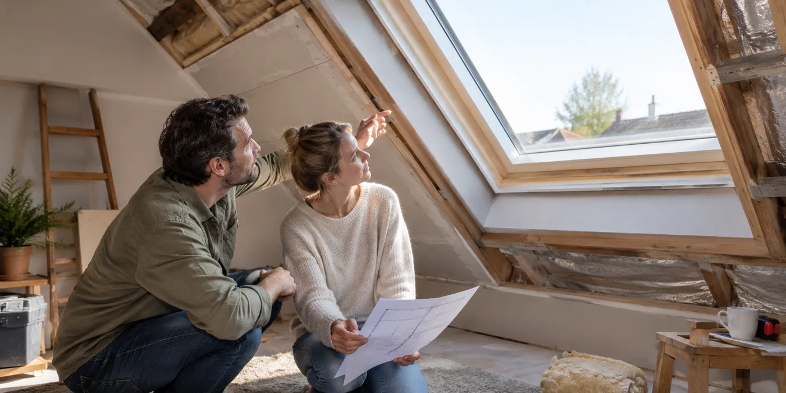

Inventariseer wat je wilt behouden
Noteer het merk, type en de zichtbare toestand van het raam. Laat beoordelen of onderdelen nog beschikbaar zijn en of hergebruik past bij de nieuwe dakopbouw. Vraag afzonderlijke prijzen voor behouden en vervangen. Zo kun je een beslissing nemen zonder dat de aannemer tijdens de uitvoering moet improviseren.
Vraag naar water- en luchtdichtheid
De buitenaansluiting en binnenaansluiting vervullen verschillende functies. Buildwise heeft een bouwdetail voor de luchtdichte integratie van een dakvenster. Vraag hoe dat principe bij jouw project wordt uitgewerkt en wie de binnenafwerking verzorgt. Een offerte waarop alleen het raammodel staat, legt die werkzaamheden nog niet vast.

Denk aan de ruimte achter het raam
Bespreek bediening, zonwering en bereikbaarheid vanuit de afgewerkte ruimte. Laat duidelijk aangeven of schilderwerk en beschadigingen aan bestaande afwerking inbegrepen zijn. Fotografeer de aansluitingen wanneer ze nog zichtbaar zijn. Dat geeft bij een latere vraag over vocht of tocht nuttiger informatie dan alleen een foto van het afgewerkte raam.
Vergelijk beide varianten op dezelfde afwerking
Een nieuwe-raamprijs en een hergebruikprijs zijn pas vergelijkbaar als ze dezelfde aansluitingen en binnenafwerking omvatten. Vraag bij beide opties wie beschadigde delen herstelt en hoe eventuele zonwering wordt meegenomen. Laat een extra ingreep aan bestaande afwerking apart benoemen. Zo zie je of een prijsverschil bij het raam zelf zit of bij werkzaamheden die de ene offerte wel vermeldt. Bewaar je keuze samen met het definitieve uitvoeringsvoorstel.
Een praktisch voorbeeld
Je kiest nieuwe buitenisolatie maar behoudt het dakraam. Vraag eerst hoe de gewijzigde opbouw aansluit op het bestaande raam. De keuze om het raam te behouden moet passen bij het ontwerp, niet alleen bij het budget.
Illustratief scenario, geen klantcase.
Neem dit mee naar je gesprek
- Toestand en type van het raam
- Geschiktheid voor nieuwe dakopbouw
- Binnen- en buitenaansluiting
- Wie verzorgt de binnenafwerking?
Veelgestelde vraag
Is een nieuw dakraam altijd nodig bij dakrenovatie?
Nee. Laat hergebruik technisch beoordelen en neem de aansluitingen mee in de vergelijking.
Bron en achtergrond
Buildwise: officiële of technische achtergrond bij dit onderwerp ↗
Geraadpleegd op 13 oktober 2026. De praktische checklist en het voorbeeld zijn redactionele uitwerkingen. Fabrikantinformatie geldt voor de beschreven producten; ze is geen algemene garantie voor andere systemen.
Wat betekent dit voor jouw woning?
Gebruik de calculator voor een eerste indicatie. Een vakman beoordeelt jouw situatie en bevestigt de uitvoering en definitieve prijs.
Bekijk de dakwerkencalculator →